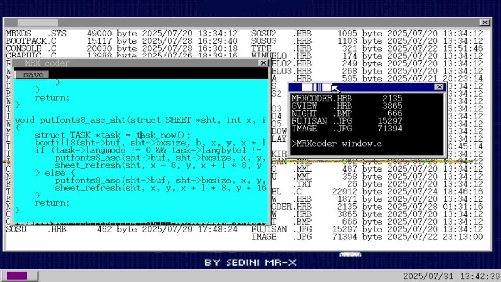
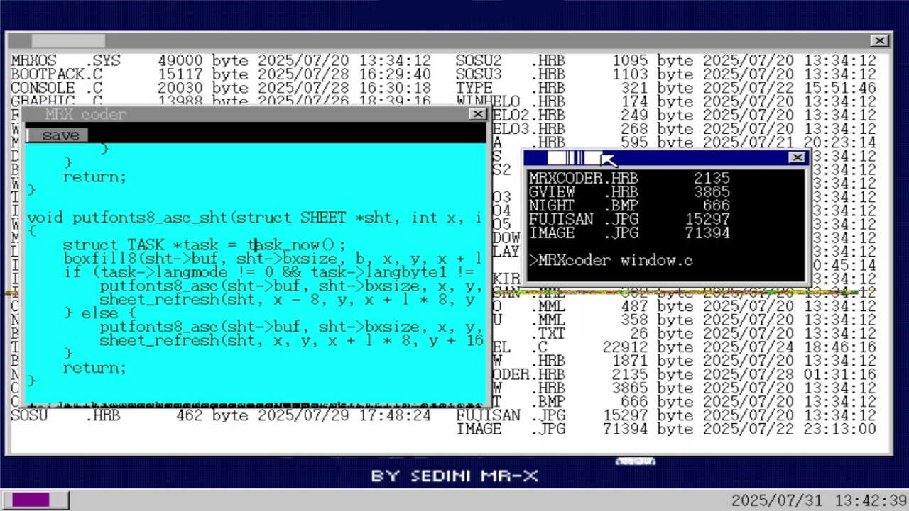

MRX OS
MRX OS is an Algerian-made operating system, considered to be the first operating system fully developed in Algeria. The system is designed as an open-source project aiming to provide a local alternative to global operating systems, with a focus on offering an advanced and user-friendly experience through its own graphical user interface (GUI). History and Development MRX OS was created by Algerian programmer MRX BHAT, who aimed to build an operating system that meets the needs of Algerian and Arab users, and reflects the capabilities of local developers in low-level software engineering. The project was launched in response to the desire to offer an alternative to well-known operating systems such as Linux and Windows, with the ambition of making MRX OS one of the most successful operating systems worldwide.
تحميل MRX OS isoصور من النظام
 
